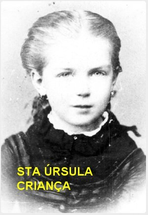
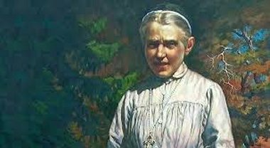
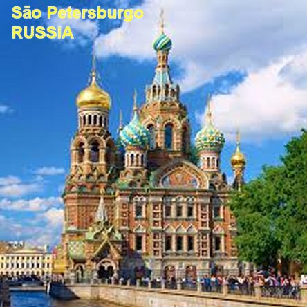
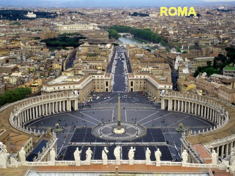

"ADMIRÁVEL EDUCADORA"
SUA FAMÍLIA

Santa Úrsula nasceu no dia 17 de
abril de 1865 em Loosdorf (Áustria), sendo a segunda de de uma família com sete
filhos. No Batizado recebeu o nome de Julia. Sua mãe, a senhora Josefina
Saliz-Zizers era de nacionalidade suíça, e descendia de uma família nobre. Seu
pai, o senhor Conde Antoni Ledóchowska procedia de uma antiga e também nobre
família polaca Ledóchowska, na qual se destacaram homens de Estado, Militares,
Eclesiásticos e pessoas Consagradas. Julia cresceu num clima familiar cheio de
amor e muito exigente. Maria Teresa, sua irmã mais velha, foi a fundadora da
Ordem Religiosa Missionárias de São Pedro Claver (Irmãs Claverianas), conhecidas
como
"Mãe da África",
foi beatificada pelo Papa Paulo VI em 1975; seu irmão
Vladimiro, um ano mais novo que ela, foi Superior Geral da Companhia de Jesus
de 1915 a 1942. Outro de seus irmãos, de nome Ignácio, foi General do exercito
polaco, morreu assassinado pelos nazistas no Campo de Concentração de Dora-Nordhausen,
em 1945.
NA POLÔNIA
Em 1883 a família se transferiu
da Áustria para a Polônia e se estabeleceu em Lipnica Murowana, próximo à Cracóvia.
Julia com o espírito sempre aberto e cativante, nos numerosos contatos com o povo,
descobriu as dificuldades e os sofrimentos daquela gente. Esta realidade lhe
ensejou o desejo de se colocar a serviço dos mais necessitados. Sua família observava
aquelas boas qualidade que ela demonstrava e diziam: “Julia tinha um coração extremamente sensível e terno, que
se comovia com a miséria, a pobreza e a desgraça dos infelizes. De algum modo, sempre
procurava atender aos doentes e os pobres, proporcionando-lhes remédios e o auxilio
necessário para minorar as suas necessidades”.
FALECIMENTO DO PAI
Em 1885, seu pai e sua irmã Maria Teresa
foram contagiados por uma epidemia de varíola, e o Conde Antoni já com o organismo
enfraquecido por outros problemas, não resistiu aos graves efeitos da doença. No
leito de morte quis ser assistido por sua filha Julia que, se manteve junto dele.
E nesta oportunidade, ela pediu permissão ao pai a fim de se tornar religiosa, o
que lhe foi concedido de coração pelo pai. O Conde Antoni Ledóchowska morreu no dia
21 de Fevereiro de 1885. A mãe, após o falecimento do marido, suplicou a Julia que
permacesse ao seu lado. E com os mesmos argumentos, o Pároco da Igreja local,
amigo da família e que sempre contou com o auxilio dela, suplicava que ela
permanecesse com a mãe, e também continuasse ajudando na Igreja e ao povo da
região. Julia, nunca negou assistência a Igreja e a sua mãe, mas tinha o seu
ideal que lhe dava forças e impulsionava a sua vida. Por isso, depois de
permanecer algum tempo junto da mãe, em 1886 entrou no Convento autônomo das
Ursulinas em Cracóvia. Durante a profissão religiosa perpétua e solene, feita
em 28 de Abril de 1889, recebeu o nome de Maria Úrsula de Jesus. A cerimônia
foi presidida pelo Cardeal Albin Dunajewski.
NOTÁVEL EDUCADORA E EXCELENTE PINTORA
Trabalhou como professora e educadora
na Escola e Pensionato das Irmãs Ursulinas, em Cracóvia. Destacou-se pelo seu devotado
e sincero amor ao SENHOR JESUS, revelando também, um precioso talento educativo, com
sabedoria e muita sensibilidade diante das necessidades dos jovens, principalmente
nas difíceis circunstâncias sociais, políticas e morais do seu tempo. Nesta mesma
época completou o seu estudo pedagógico. Também recebeu aulas de pintura e revelou
outra admirável qualidade: uma exímia pintora. E assim, pintou diversos quadros
com grande perfeição, e entre eles, um lindo quadro da Sagrada Família pintado
anos posteriores, e que foi colocado no Altar Mor da Capela do Convento, e hoje
se encontra no refeitório da Casa Mãe em Pniewy, na Polônia.
No período de 1896-97, separou um
tempo necessário e se dedicou ao estudo do idioma francês em Beaugency e Orleans,
obtendo o diploma com o direito de poder ensiná-lo profissionalmente.
SUPERIORA DO CONVENTO DE CRACÓVIA

Em 1904 foi eleita Superiora do Convento
de Cracóvia. E nesse tempo empreendeu arrojadas iniciativas apostólicas. Com grande
insistência, conseguiu licença do Cardeal Jan Puzyna para instituir o internato de
jovens universitários, junto ao Convento, que foi uma providência útil e necessária,
e a primeira realizada na Polônia. Os jovens estudantes não só encontrava um lugar
seguro, como também a oportunidade de receber uma sólida formação religiosa. Os jovens
ingressavam na Congregação Mariana e participavam de Cursos dirigidos por eminentes
teólogos, para aprofundar os seus conhecimentos e sua visão cristã da vida. Como
professora unia o minucioso conhecimento da matéria com uma acessível e interessante
forma de ensinar. Exercia uma profunda e duradoura influencia sobre
as estudantes. Não poupava esforços para aprofundar nas alunas a vida
espiritual. E por outro lado, com as Irmãs da Comunidade Religiosa, ela como
Superiora, dedicava um tratamento paciente e compreensivo, como uma verdadeira
Mãe, deixando-as tranquilas e fervorosas no cumprimento das suas obrigações.
UM PROJETO CORAJOSO
Convencida da necessidade de adaptar
as Constituições da Ordem, de acordo com as novas exigências pastorais, se dirigiu
a Roma em 1907. Na audiência, também propôs ao Papa Pio X realizar um trabalho apostólico
no coração da Rússia, que continuava hostil a Igreja. O Sumo Pontífice elogiou a sua
coragem e o seu projeto, inclusive estimulou o seu desejo, concedendo-lhe uma cordial
bênção com os votos de excelente êxito. Fortalecida pelas palavras do Papa, se despediu
e tratou de estudar as possibilidades de concretizar o seu ideal.
Retornando a Cracóvia, recebeu uma
correspondência com o pedido oficial do Padre Konstanty Budkiewicz, Pároco da Paróquia
de Santa Catarina em São Petersburgo na Rússia, que a convidava a assumir a direção do
“Internato para Jovens”,
na sua Paróquia na União Soviética. Nesse mesmo ano, ao
concluir o triênio de seu cargo de Superiora do Convento de Cracóvia, em companhia de
outra religiosa, Alina Zaborska, ambas vestidas com roupa civil, considerando que a vida
religiosa estava proibida no país russo, viajou para São Petersburgo, a fim de analisar
a indicação do Padre Konstanty. Lá chegando, não se desencorajou diante das numerosas
dificuldades que logo percebeu, assim como do deplorável estado financeiro do pensionato,
os desconcertantes tratamentos dos educadores e professores mal dispostos para com as
religiosas, inclusive da falta de conhecimento do idioma russo por muitos deles, e da
necessidade de ocultar a sua própria identidade religiosa, pelo menos nos contatos oficiais.
Todavia a aproximação com as moças foi relativamente fácil. Eis o que relata uma delas:
“Esperávamos na grande sala, meio rebeldes
em face do que nos foi dito, sobre a nova e severa educadora. Entretanto, foi uma pessoa
serena e carinhosa que entrou, e sobre nós passou um olhar bondoso e disse com sorriso: Então,
daqui em diante seremos uma família, certo? Nós todas, sorridentes, fomos para junto dela.
Rompeu-se o gelo”.Também o corpo docente
foi conquistado, e algumas das professoras, e entre elas a responsável pelo
pensionato que era católica ocultamente, aumentou por isso mesmo, o numero de
Irmãs da Comunidade, evidentemente no maior segredo.
CONCORDOU QUE ERA DIFÍCIL,
MAS NÃO IMPOSSÍVEL

Ciente das boas possibilidades retornou
a Cracóvia e esperou completar o seu triênio como Superiora do Convento de Cracóvia,
o que aconteceu em 29 de Julho de 1907.
A
nova Superiora do Convento a nomeou como Superiora da Missão em São Petersburgo,
e então Madre Úrsula partiu para a Missão na Rússia com mais duas Irmãs da Ordem
Religiosa. E as três tiveram o cuidado de usarem trajes civis, e então, assumiu
a direção do Internato em São Petersburgo. Estudou o idioma russo profundamente,
e de acordo com as exigências oficiais, prestou exames em todas as matérias
exigidas a fim de poder lecionar na Rússia. Foi aprovada e recebeu o diploma.
Todavia, pelas leis soviéticas, as religiosas viviam na clandestinidade, e
sempre estavam vigiadas pela policia secreta que acompanhava todos os seus
passos. Mesmo assim, elas realizavam um intenso trabalho educativo e de formação
religiosa, objetivando estabelecer boas relações entre polacos e russos.
Por causa das dificuldades
de comunicação com a Santa Sé, na Itália, somente chegou à aprovação da ereção
canônica do “Convento
Ursulino de São Petersburgo” em 1908,
que designava Madre Úrsula como Superiora, e determinava a Instituição como
Casa Autônoma com Noviciado. No ano seguinte, a atividade do Convento se estendeu
a Finlândia, onde Madre Úrsula construiu uma Escola com internato para meninas.
SOCIEDADES DE NOSSA SENHORA
 Com a necessária licença do Bispo
Dom Stefan fundou o “Sodalício
Mariano”. Na realidade ela fundou três grupos
distintos: “Sodalício de
Estudantes”, “das Senhoras”, e “Sodalício das Universitárias”. (Sodalício é uma sociedade de pessoas que vivem juntas com o mesmo objetivo)
Com a necessária licença do Bispo
Dom Stefan fundou o “Sodalício
Mariano”. Na realidade ela fundou três grupos
distintos: “Sodalício de
Estudantes”, “das Senhoras”, e “Sodalício das Universitárias”. (Sodalício é uma sociedade de pessoas que vivem juntas com o mesmo objetivo)
Em Abril de 1908, comprou um terreno
nas proximidades de Sortavala, em Carélia, no Golfo Finlandês. Na época aquele território
pertencia à Rússia. A organização recebeu o nome de “Casa Merentähti”
(Casa Estrela do Mar) em honra de NOSSA SENHORA. E realmente a Casa estava
próxima da praia, com uma visão admirável. Então a Madre mandou fazer uma linda
imagem de NOSSA SENHORA, no tamanho de uma pessoa, com uma coroa de estrelas e
com os braços e mãos estendidas, em atitude convidativa, como se quisesse dizer:
“Venham a MIM, EU os consolarei
e ajudarei”.
Madre Úrsula continuou o seu trabalho
em São Petersburgo juntamente com parte das Irmãs da Comunidade, enquanto as outras
marcavam presença semanal na Casa Finlandesa.
FALECIMENTO DE SUA MÃE
Em 14 de Julho de 1909, morreu sua
Mãe. A senhora Józefina Salis-Zizers Ledóchowska, que estava sendo bem cuidada por
uma de suas filhas. Mas com a idade avançada, e outros sérios problemas de saúde,
não conseguiu viver, mesmo com bons e exaustivos tratamentos. Madre Úrsula só
recebeu a pequena carta com a comunicação do fato, quase um mês depois.
REPRESSÕES CONTRA A IGREJA CATÓLICA
No mês de Setembro Madre Úrsula abriu
o Ginásio particular feminino em Merentähti. Todavia, as repressões soviéticas contra
a Igreja Católica continuaram cada vez mais intensas. As Irmãs foram obrigadas a fechar
as Capelas tanto em São Petersburgo como em Merentähti. Então, ficaram sem as Santas Missas
e sem receber JESUS SACRAMENTADO.
VIAJEM A ROMA
Madre Úrsula, viajou a Cracóvia em 10
de Maio de 1913, onde encontrou a sua irmã de sangue Maria Teresa, que era Superiora
da Congregação Missionária de São Pedro Claver. As duas conversaram assuntos religiosos
e seguiram para Roma, pois ambas tinham assuntos religiosos diferentes a tratar com o
Papa Pio X. Aconteceu que logo na chegada foram prevenidas, de que o Sumo Pontífice não
estava bem de saúde, e que o atendimento estava sendo bem reduzido. Mas o Papa recebeu
as duas irmãs Madres. Na oportunidade, Madre Úrsula mostrou ao Sumo Pontífice, um resumo
do seu trabalho na Rússia, em cores. Ele leu as realizações, e também percebeu a
realidade de que os russos re-iniciaram uma forte ofensiva contra os Católicos.
Ela então perguntou ao Papa, se ele mandava abandonar a Rússia? O Papa respondeu:
“Não. Dou-lhe total liberdade, pois a
senhora tem o Alvará. Por outro lado, posso lhe dizer, que não tenho mais
esperança de que as relações com a Rússia melhorem. A senhora deverá decidir se
vai continuar lá, enfrentando todas as possíveis adversidades”. Respeitosamente, depois de conversar um pouco com a outra Madre,
abençoou as duas irmãs, porque ele não estava com boa disposição física.

 PRÓXIMA PÁGINA
PRÓXIMA PÁGINA
RETORNA AO ÍNDICE